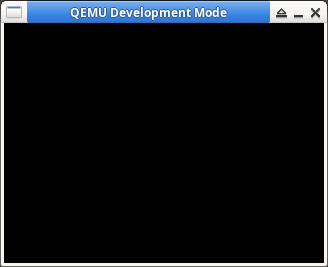

參考資訊：
https://wiki.libsdl.org/FrontPage
main.c
#include <stdio.h>
#include <stdlib.h>
#include <SDL.h>
#include <SDL_image.h>
int main(int argc, char **argv)
{
const int w = 320;
const int h = 240;
const int bpp = 16;
SDL_Window *window = NULL;
SDL_Init(SDL_INIT_VIDEO);
window = SDL_CreateWindow("main", SDL_WINDOWPOS_UNDEFINED, SDL_WINDOWPOS_UNDEFINED, w, h, SDL_WINDOW_SHOWN);
SDL_SetWindowTitle(window, "QEMU Development Mode");
SDL_Delay(3000);
SDL_DestroyWindow(window);
SDL_Quit();
return 0;
}
編譯、執行
$ gcc main.c -o main -lSDL2 -I/usr/include/SDL2 $ ./main
